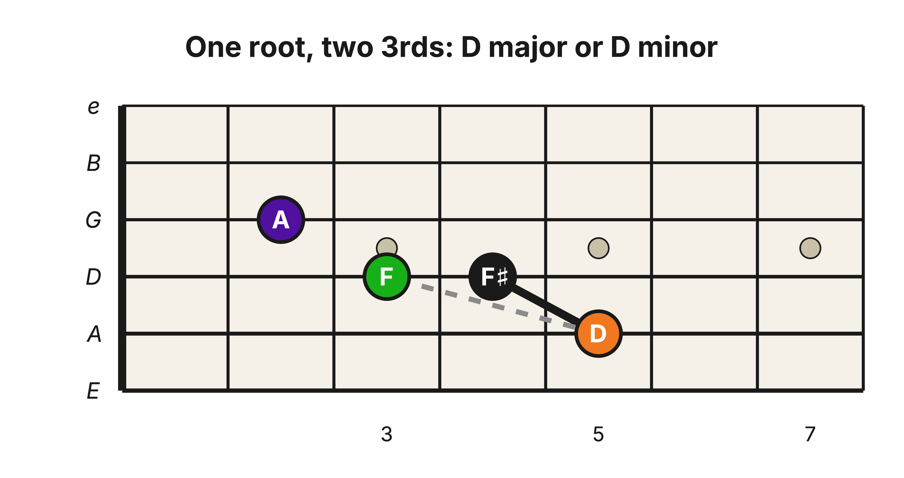

Level 2 · Chapter 7
Music Theory: The Minor Triad
In the last chapter we built the Major triad from one specific stack of intervals: a Major 3rd on the bottom with a minor 3rd on top (M3 + m3). Only three of the seven chords in a Major key were built that way, the I, IV, and V. That leaves the others. What are they?
Go back to the interval from the root up to the 3rd of every chord in the harmonized C Major scale. Here is that row again, from "Chapter 3: Harmonizing the C Major Scale in 3rds":
| 3 ➡ | E | F | G | A | B | C | D |
| 1 ➡ | C (1̂) | D (2̂) | E (3̂) | F (4̂) | G (5̂) | A (6̂) | B (7̂) |
| M3 = Major 3rd, m3 = minor 3rd ➡ |
M3 | m3 | m3 | M3 | M3 | m3 | m3 |
Four of those seven root-to-3rd intervals are minor 3rds: D-F, E-G, A-C, and B-D. Three of them (D, E, and A) are the roots of the minor triads in the key: the ii, iii, and vi chords.
| Chord Degree ⬇ |
|||
| 5 | A | B | E |
| 3 | F | G | C |
| 1 | D | E | A |
| Roman Numeral ⮕ | ii | iii | vi |
(The fourth minor 3rd, B-D, begins the vii° chord. Its outer interval, B up to F, is a diminished 5th rather than a Perfect 5th (the same B–F you measured back in Level 1), so it is not a minor triad. We will set it aside here.)
The minor triad
A minor triad is the Major triad's stack turned upside down. Building up from the root of a chord, a minor 3rd lands on the 3rd, and a Major 3rd stacked on top of that lands on the 5th. m3 + M3 is the interval formula for the minor triad: the same two intervals as a Major triad, in the opposite order.
![The D, E, and A minor triads (the ii, iii, and vi chords in the key of C) in root position on the A-D-G strings, each chord's two 3rds shown as connecting lines: a dashed gray line marks the minor 3rd from the root to the 3rd, and a solid black line marks the Major 3rd from the 3rd to the 5th. D minor: root D on the A string at the 5th fret in orange, the 3rd F on the D string at the 3rd fret in green, the 5th A on the G string at the 2nd fret in indigo. E minor: root E on the A string at the 7th fret in yellow, the 3rd G on the D string at the 5th fret in blue, the 5th B on the G string at the 4th fret in purple. A minor: root A on the A string at the 12th fret in indigo, the 3rd C on the D string at the 10th fret in red, the 5th E on the G string at the 9th fret in yellow.](../assets/img/d-e-a-minor-triads-a-d-g-lines.png)
Major and minor share the same frame
Add the two stacked 3rds together and the outer notes span 7 half steps, a Perfect 5th, exactly as they did for the Major triad. The arithmetic is the same, just reordered: a minor 3rd is 3 half steps and a Major 3rd is 4, and 3 + 4 = 7.
- D–A is a Perfect 5th
- E–B is a Perfect 5th
- A–E is a Perfect 5th
That is the heart of it: a Major triad and a minor triad live inside the very same Perfect 5th frame, the frame you built power chords from in Level 1. The root and the 5th do not move. Only the middle note, the 3rd, changes.
In a Major triad the 3rd sits a Major 3rd above the root. Lower that one note by a single half step and it becomes a minor 3rd above the root, and the whole chord turns minor.

Hear it
The figure above is playable, so play both shapes slowly.
- Play C major: C on the A string (3rd fret), E on the D string (2nd fret), and open G.
- Then play D minor: D on the A string (5th fret), F on the D string (3rd fret), and A on the G string (2nd fret).
Go back and forth. C major stacks a Major 3rd then a minor 3rd. D minor flips that order: minor 3rd, then Major 3rd.
Try it yourself
For each root below, first spell the Major triad. Then lower only its 3rd by one half step to produce the parallel minor triad. Label the root, 3rd, and 5th in both versions.
- D
- E
- A
Answer key and success standard
- D Major (D, F♯, A) → D minor (D, F, A)
- E Major (E, G♯, B) → E minor (E, G, B)
- A Major (A, C♯, E) → A minor (A, C, E)
Pass when all six triads are correctly spelled and only the 3rd changes in each pair. If the root or 5th moves, rebuild the Major triad before attempting the minor change again.